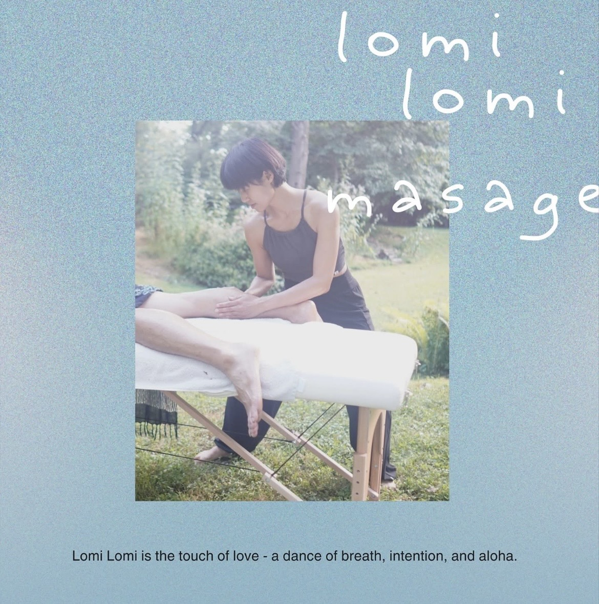

光之手 light Hand
源自夏威夷的古老療癒方式，以流動的律動，陪你回到平衡與安定。
HAWAIIAN HEALING TOUCH
源自夏威夷的古老療癒方式，以流動的律動，陪你回到平衡與安定。
HAWAIIAN HEALING TOUCH
光之手 Light Hand
天空連結著大海，大海連結著大地，大地連結著萬物，萬物連結著天地之心。
手心裡有陽光，也有星星的笑容。
向宇宙摘下每一顆星辰，在靜默之中，將光與溫柔，贈與每一個生命，每一座身體的殿堂。
願每一次溫柔的碰觸，都陪伴你，慢慢長回自己的模樣。
我是.光之手
關於我為何我選擇 Lomi Lomi？
我不是因為想成為按摩師，才選擇了 Lomi Lomi。
而是在走了很久以後，我才發現——
原來，Lomi Lomi 一直在等我。
第一次聽見夏威夷的祈禱文時，我深深地被觸動了。
那是一種很奇妙的感覺。
當時的我，其實不知道那是什麼，也不了解 Lomi Lomi 是一種什麼樣的按摩，更不知道它會帶我走向哪裡。
但我的心裡，卻有一個很清楚的聲音：
「我一定要學。」
於是，我開始尋找 Lomi Lomi。
當我真正走進它的世界後，我才慢慢明白，為什麼當初會有那麼強烈的召喚。
因為它彷彿把我生命裡一路走來的所有經歷，都串連在了一起。
我喜歡植物。喜歡走進大自然，觸摸泥土，感受陽光與風。
我練習瑜伽，也透過呼吸與靜心，讓自己回到內在。
我學習藝術，習慣用感受去觀看這個世界。
而 Lomi Lomi，讓這一切都相遇了。
它像海浪一樣流動。
也像大地一樣，穩穩地承接著一個人的身體。
在按摩的過程裡，我開始感受到一種從未有過的安定。
那時的自己，就像一棵深深扎根的大樹。
雙腳踩著大地，身體隨著呼吸流動，而雙手，則安靜地陪伴著眼前的生命。
那一刻，我找到了自己最有力量的狀態。
不是用力。
而是穩定。
不是控制。
而是信任。
不是急著改變一個人。
而是透過溫柔的碰觸，陪伴她慢慢回到自己。
我想，這就是我選擇 Lomi Lomi 的原因。
或者應該說——
不是我選擇了 Lomi Lomi。
而是在生命走過許多道路之後，我終於走到了它面前。
這也是我想透過雙手，帶給每一位來到「光之手」的人。
願每一次溫柔的碰觸，
都陪伴你，慢慢長回自己的模樣。
